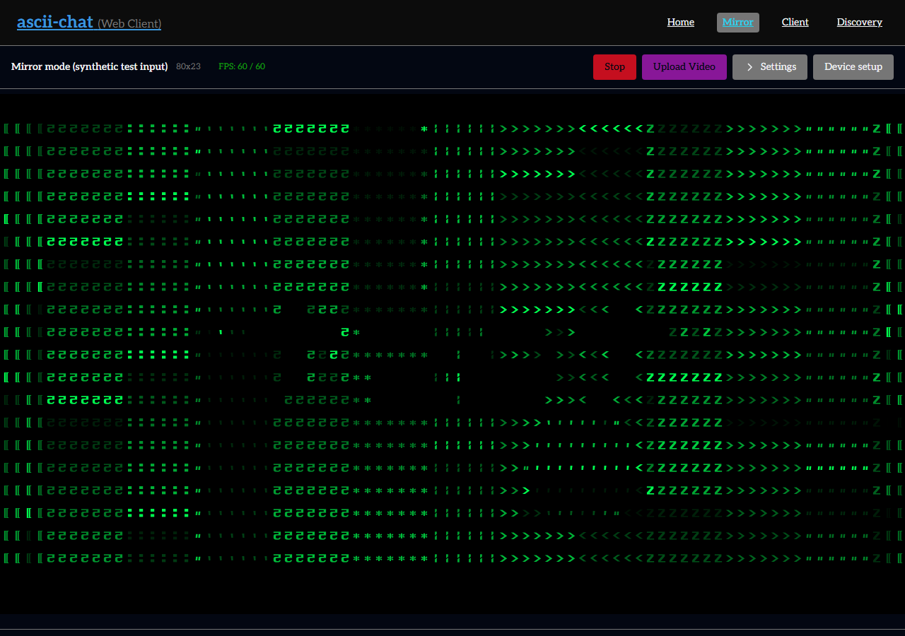
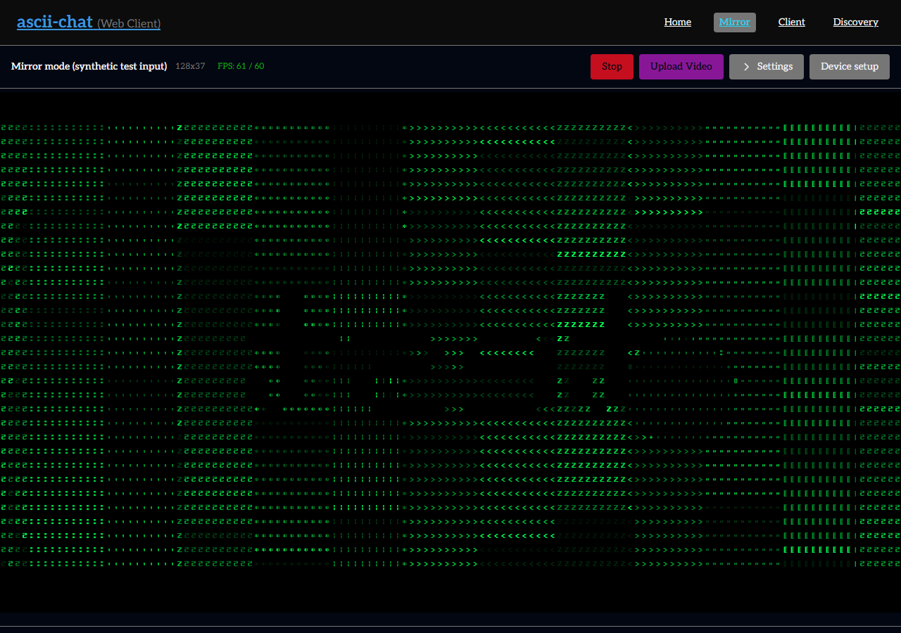

Before · 80 × 23
12 pt · 16 × 32 px cells · 1,840 character positions


Same 1280 × 900 browser viewport and synthetic source. Settings closed for identical drawable space. Regular mode: 128 columns × 37 rows.


Both screenshots use freshly rebuilt WASM. Matrix fits 2.57× as many characters; regular mode is unchanged.